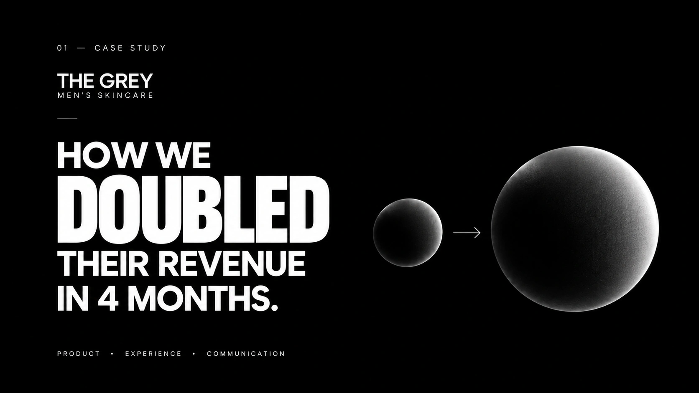
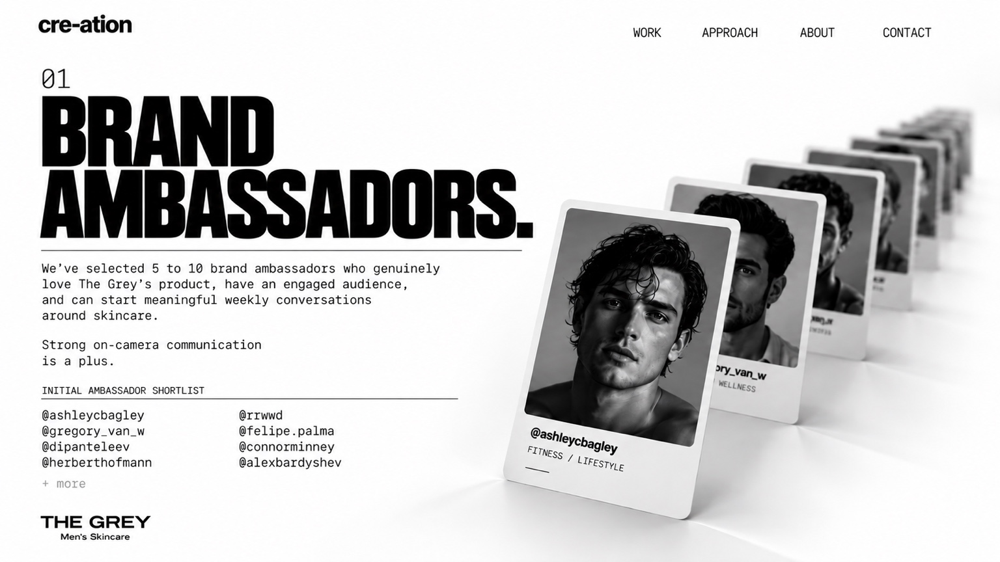
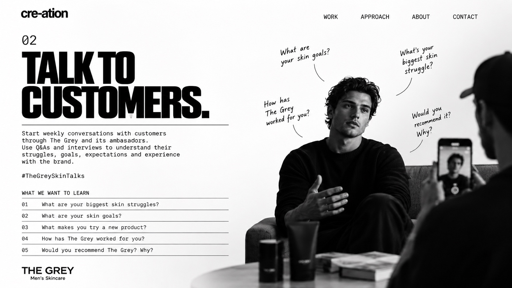
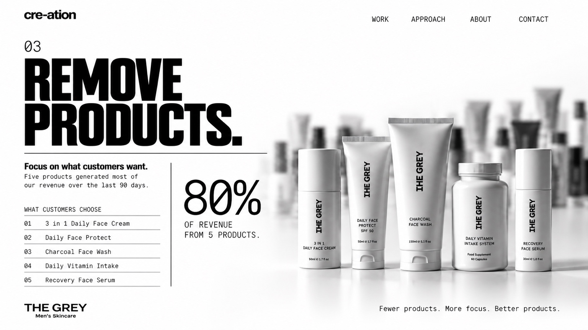
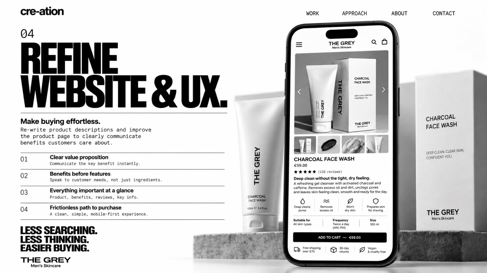
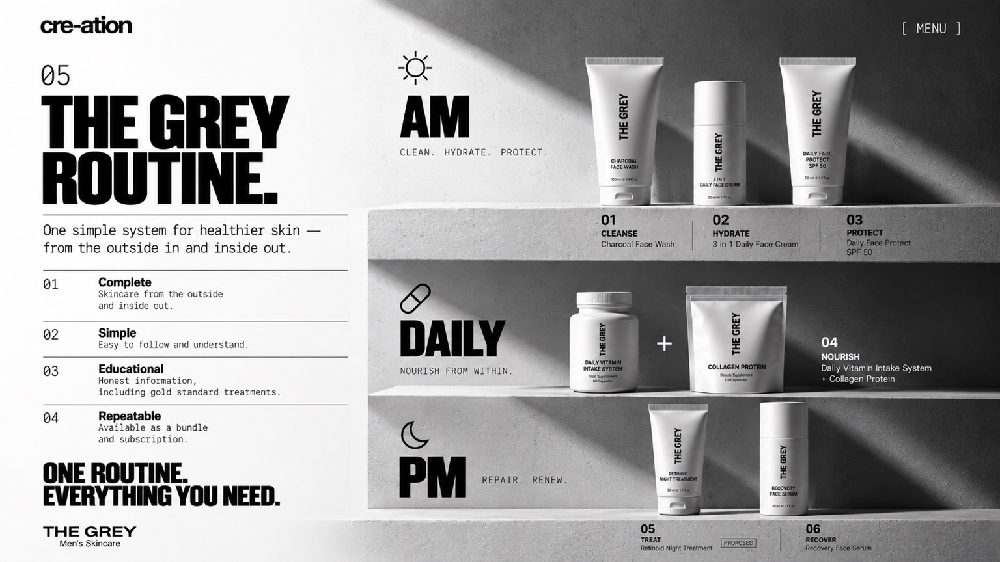
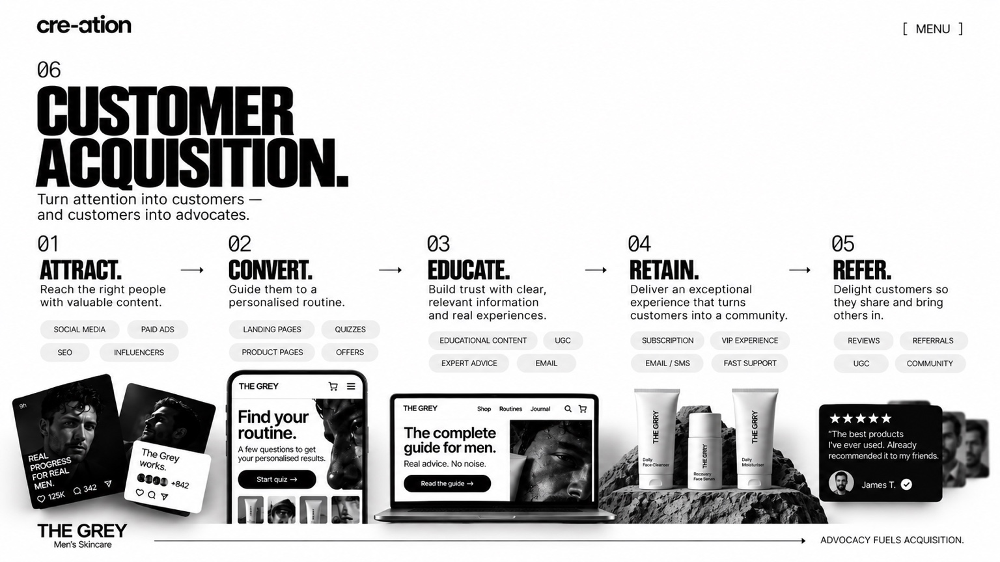

The Grey Men's Skincare: How we doubled their revenue in 4 months.

How we did it
01 Brand ambassadors

02 Talk to customers

03 Remove products

04 Refine website and UX

05 The Grey Routine

06 Customer acquisition
